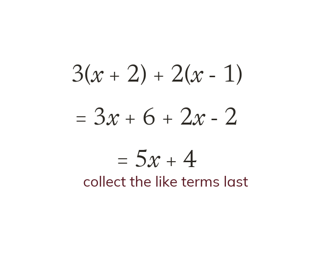
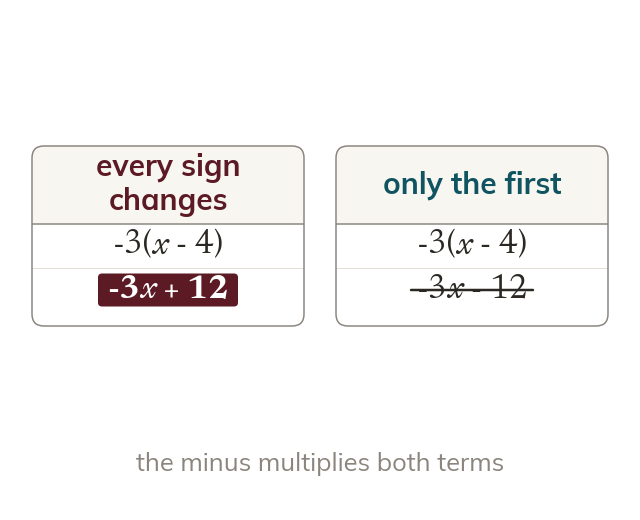
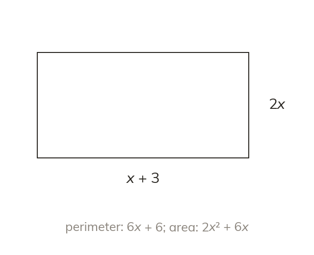
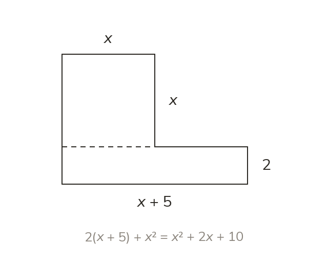
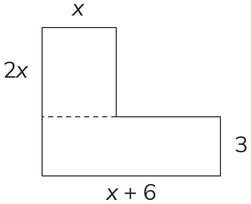
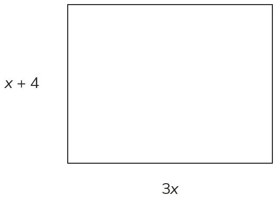
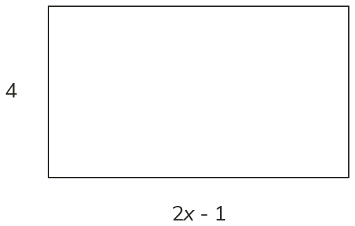

One bracket at a time
An expression with several brackets is expanded one bracket at a time. Only then are the like terms collected.
Real expressions rarely have just one bracket. Expanding several at once, and handling a minus in front, is the skill behind every perimeter and area expression you will form.
Work down the page at your own pace. Write every answer in your book first, then click to check it.
Read each card, then follow the worked examples one step at a time.

An expression with several brackets is expanded one bracket at a time. Only then are the like terms collected.

A negative outside a bracket changes the sign of every term inside. Subtracting a bracket does the same: 5 − (x − 2) = 5 − x + 2.
Pick an answer. If it's wrong, the feedback tells you which mistake it was.
Read each card, then follow the worked examples one step at a time.

A perimeter adds every side length, so its expression collects like terms. An area multiplies two lengths, so its expression expands a bracket.

A compound shape is split into rectangles whose areas are added. Each area is an expression, expanded before the like terms are collected.

Pick an answer. If it's wrong, the feedback tells you which mistake it was.


Finished? Next lesson: 8.14.6 Expanding Double Brackets.
Log in, then search for a code to practise that skill.
Videos, worksheets and more on each part of this lesson.